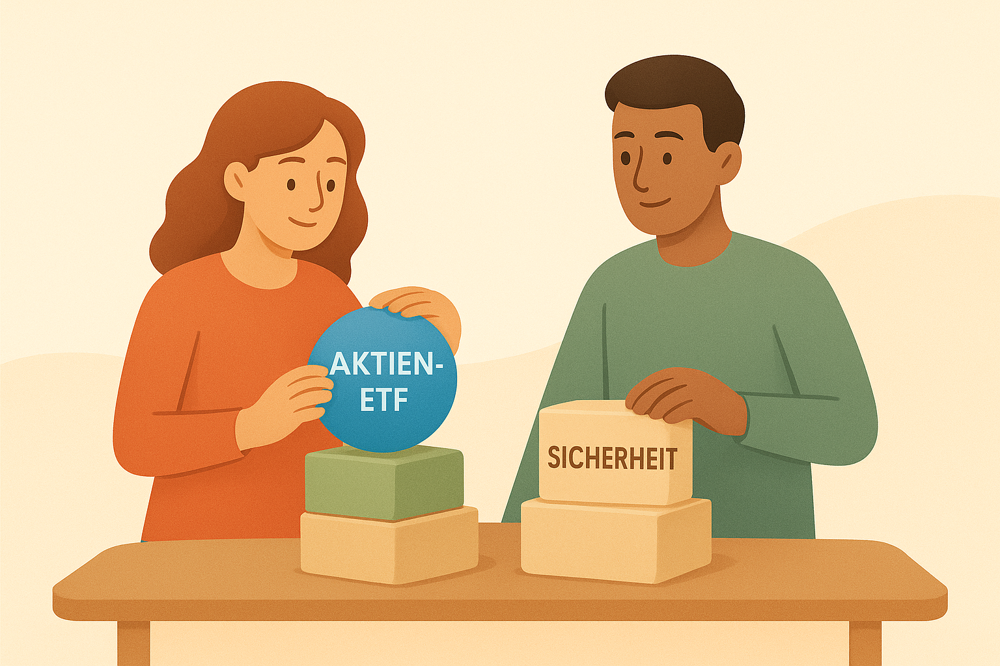

13 Schritt 2: Dein Basis-Portfolio erstellen
Nachdem du im vorherigen Kapitel deine Ziele definiert, deinen Risiko-Komfort ausgelotet und deine finanzielle Ausgangslage sortiert hast, geht es jetzt ans Herzstück deiner Investmentreise: der Aufbau deines ersten Portfolios. In diesem Kapitel erfährst du, wie du eine klare Struktur findest, welche Bausteine sinnvoll sind und wie du die vielen Möglichkeiten auf ein einfaches, alltagstaugliches Modell herunterbrichst.
Wir orientieren uns dabei an einem Prinzip, das sich für Einsteiger wie für Fortgeschrittene bewährt hat:
Ein gutes Portfolio muss nicht komplex sein – es muss zu dir passen.
13.1 Warum ein Portfolio überhaupt Struktur braucht
Vielleicht fragst du dich: Reicht es nicht, einfach „irgendwelche ETFs“ zu kaufen? Oder „ein paar Aktien auszuprobieren“?
Kurz gesagt: Du kannst das machen – aber du schaffst dir damit sehr wahrscheinlich ein Sammelsurium, das weder zu deinen Zielen noch zu deinem Risiko passt. Ein Portfolio ist keine zufällige Sammlung von Wertpapieren, sondern eine Absichtserklärung, wie du dich der Zukunft zuwenden möchtest.
Eine günstige, klare Struktur hilft dir:
👉 das Risiko zu kontrollieren
👉 das Wachstumspotenzial zu nutzen
👉 Fehlkäufe zu vermeiden
👉 und langfristig entspannt zu bleibenSamir hat genau das beim Start gemerkt. Er wollte „einfach anfangen“ und kaufte drei Tech-Aktien, die in Social Media gerade gehypt wurden. Nach zwei Monaten war er frustriert: Das Portfolio schwankte stark, und er wusste nicht, ob er „dranbleiben“ sollte. Lisa dagegen nahm sich eine Stunde Zeit und baute eine ganz einfache Struktur mit zwei ETFs – und ist bis heute glücklich über diese Entscheidung.
13.2 Die drei Grundbausteine jedes Einsteiger-Portfolios

Auch wenn Portfolios später komplexer werden können, besteht ein gutes Starter-Portfolio fast immer aus drei Elementen:
1. Ein weltweit gestreuter Aktienbaustein
Der Wachstumsanteil deines Vermögens. Typischerweise: breit gestreute Welt-ETFs.
Eigenschaften:
👉 langfristig hohes Renditepotenzial
👉 dafür kurzfristig höhere Schwankungen
👉 ideal für langfristige Ziele2. Ein stabilisierender Sicherheitsbaustein
Der ruhige Gegenpol zu den Aktien.
Das können sein:
👉 Tagesgeld (kurzfristige Sicherheit)
👉 Anleihen-ETFs (für mittelfristige Stabilität)Er sorgt dafür, dass das Portfolio nicht wie ein ungebremster Rollercoaster wirkt.
3. Ein Liquiditätsbaustein (für Unvorhergesehenes)
Er ist nicht sexy, aber nötig: deine finanzielle Gelassenheit.
Beispiele:
👉 Notgroschen
👉 „Puffer-Konto“
👉 geringe Rücklage im TagesgeldGerade Einsteiger überschätzen oft, wie sehr sie in Stress geraten können, wenn „alles investiert“ ist.
13.3 Die klassische Frage: Wie viel Aktien, wie viel Sicherheit?
Hier greift das Zusammenspiel aus deinen Erkenntnissen aus Kapitel 11: Risiko, Zeithorizont, Zielklarheit.
Wenn dein Horizont lang ist (8+ Jahre): Ein hoher Aktienanteil ist realistisch – oft 70–100 %.
Wenn dein Horizont mittlerer Natur ist (3–7 Jahre): Ein ausgewogener Mix ist sinnvoll – 40–70 % Aktien.
Wenn deine Ziele kurzfristig sind (unter 3 Jahren): Dann spricht vieles für ein Portfolio ohne Aktien – also 0 % Aktien.
Eine Faustregel, die vielen hilft:
Dein Aktienanteil ist der Teil, bei dem du nachts noch ruhig schlafen kannst.
13.4 Einfache Beispiel-Portfolios für Einsteiger
Die Beispiele dienen als Orientierung – angepasst an verschiedene Risikotypen.
📌 Beispiel 1: „Einfach anfangen“ – superminimalistisch
Ideal für alle, die schlicht starten wollen.
👉 80 % Welt-Aktien-ETF
👉 20 % Tagesgeld oder Anleihen-ETF
Vorteile: kaum Pflege, sehr robust.
📌 Beispiel 2: „Ausgewogen & stabil“ – für mittlere Risikofreude
👉 60 % Welt-Aktien-ETF
👉 20 % Schwellenländer-ETF oder zusätzlicher Weltbaustein
👉 20 % Anleihen-ETF
Vorteile: gute Mischung, weniger Schwankung.
📌 Beispiel 3: „Dynamischer Wachstumsfokus“ – für langfristige Ziele
👉 90 % Welt-Aktien-ETF
👉 10 % Liquiditätspuffer
Vorteile: hohes Wachstumspotenzial; perfekt für >10 Jahre.
13.5 Warum du (fast) keine Einzelaktien brauchst
Viele Einsteiger wollen „auch mal eine Aktie besitzen“. Das ist verständlich – Aktien wirken spannend und erlauben ein Gefühl von Ownership. Doch für dein Kernportfolio gilt:
👉 Einzelaktien erhöhen dein Risiko
👉 sie kosten Zeit, Aufmerksamkeit und Emotionen
👉 sie passen selten zu langfristigen ZielenWenn du möchtest, kannst du maximal 5–10 % deines Portfolios für sogenannte „Spielgeld-Investments“ nutzen. Der Kern sollte jedoch breit gestreut und langweilig bleiben – und genau das ist seine Stärke.
13.6 Deine persönliche Portfolio-Formel
Am Ende läuft alles auf drei Fragen hinaus:
- Wie viel Wachstum willst du langfristig erreichen? → Aktienanteil
- Wie viel Schwankung willst du aushalten? → Sicherheitsbaustein
- Wie viel Flexibilität brauchst du im Alltag? → Liquidität
Wenn diese drei Elemente zusammenpassen, entsteht automatisch ein Portfolio, das zu dir und deinem Leben passt – nicht zu Trends oder Empfehlungen anderer.
13.7 Lisa und Samir: Zwei Wege, ein Prinzip

Lisa baut ihr Portfolio auf Grundlage ihrer klaren Ziele: Sie investiert langfristig und setzt deshalb auf einen hohen Aktienanteil. Die Struktur bleibt simpel – zwei ETFs, ein Puffer, fertig.
Samir wiederum stellte fest, dass ihn starke Schwankungen nervös machen. Also reduzierte er seinen Aktienanteil auf 60 % und ergänzte einen stabilen Anleihen-ETF. Er hat heute die Sicherheit, die er braucht, um dranzubleiben.
Beide haben recht – denn sie haben ein Portfolio, das zu ihrer Persönlichkeit passt.
13.8 Was du aus diesem Kapitel mitnehmen solltest
👉 Ein gutes Portfolio muss nicht kompliziert sein – nur klar strukturiert.
👉 Drei Bausteine genügen fast immer: Aktien, Sicherheit, Liquidität.
👉 Der Aktienanteil richtet sich nach deinem Zeithorizont und deinem Risikokomfort.
👉 Beispiel-Portfolios können Orientierung geben, aber du bestimmst die finale Mischung.
👉 Weniger ist mehr: Ein einfaches Portfolio funktioniert oft besser als ein über-optimiertes.
👉 Das beste Portfolio ist das, mit dem du **auch in unruhigen Zeiten** weiterinvestierst.13.9 Zum Nachdenken
Welche Emotionen löst der Gedanke an stark schwankende Kurse bei dir aus? Wenn du dein Portfolio in einem Satz beschreiben müsstest – was wäre der Satz? Ist dein Portfolio so aufgebaut, dass es zu deinem Leben passt, nicht zu Trends?
13.10 Ausblick
Im nächsten Kapitel geht es um die konkreten Werkzeuge, mit denen du dieses Portfolio tatsächlich umsetzt: Wie du ETFs auswählst, was es mit Replikationsmethoden auf sich hat, wie Kosten funktionieren – und worauf du achten solltest, bevor du deinen ersten ETF in dein Depot legst.